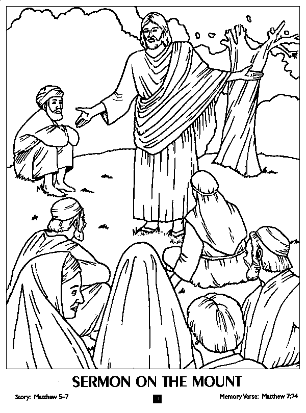

Read the lessons at the Vanderbilt Library website: http://divinity.lib.vanderbilt.edu/lectionary/cEpiphany/cEpiphany6.htm
Read
the lessons at the Vanderbilt Library website:
http://divinity.lib.vanderbilt.edu/lectionary/cEpiphany/cEpiphany6.htm
Elementary School Pew-work
|
B N O S K A L Y T |
DISCIPLES KINGDOM BLESSED LOOKED YOURS THEN SAID POOR NRSV LUKE WHO HIS GOD FOR ARE AND UP OF AT |
(Luke 6:20) Then he looked up at his disciples and said: "Blessed are you who are poor, for yours is the kingdom of God. (NRSV) |
from www.geocities.com/lectionarypuzzles/ free to distribute for free with this notice. Words are in a straight line left to right or top to bottom |
||
Unscramble the bold words:
|
20Jesus
looked at his dpslsciie
_______and said: |
who
are crying. |
1. Which people will
God
bless? |
